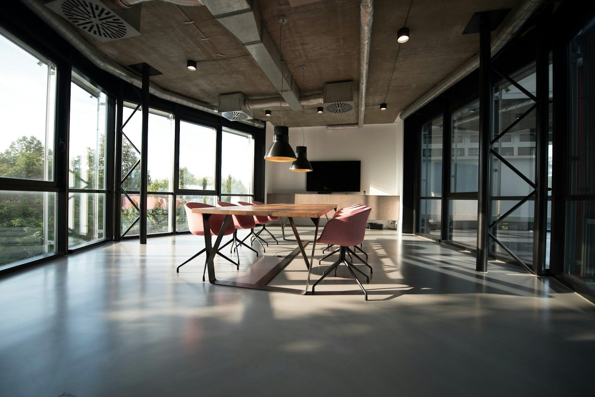

01Relações familiares
Direito de família
Orientação em acordos, organização patrimonial e questões familiares.
Uma atuação jurídica próxima, com análise cuidadosa e orientação em cada etapa.

Da vida em família às decisões do negócio, a análise começa pela sua situação.
Orientação em acordos, organização patrimonial e questões familiares.
Análise de contratos, responsabilidades e conflitos entre particulares.
Assessoria jurídica para organizar decisões e relações do seu negócio.
A atuação depende da avaliação do caso. A demonstração não oferece orientação jurídica individual.
Conhecer o contexto, analisar documentos e esclarecer caminhos possíveis. É assim que construímos um atendimento com responsabilidade e linguagem acessível.
Descreva de forma geral o motivo do contato.
O contexto e os documentos são avaliados em atendimento próprio.
Possibilidades, escopo e condições são esclarecidos.
Os próximos passos são combinados conforme a necessidade.
Não inclua informações sigilosas ou documentos nesta demonstração.
Marca e proposta fictícias. Serviços e condições precisam ser adaptados à operação real.
Não. A orientação depende da análise do caso e dos documentos relevantes.
O modelo apresenta a possibilidade de contato remoto. Disponibilidade e condições devem ser confirmadas com o escritório.
Este site é uma demonstração criada pela Brusyn. Marca, serviços e dados comerciais são fictícios. As imagens são referências ilustrativas.